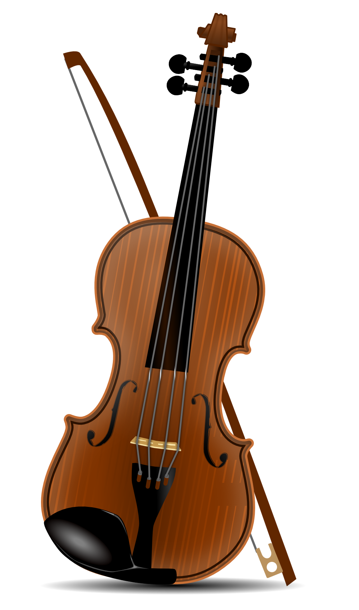
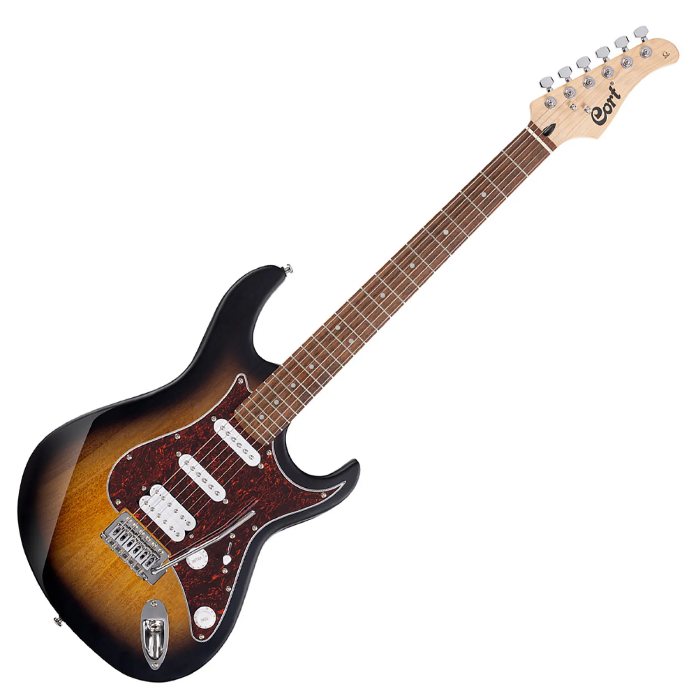

A hangszerek olyan eszközök, amelyek hangokat keltenek, és amelyekkel ritmust, dallamot vagy harmóniát lehet megszólaltatni. A zenében gyakran csoportosítjuk őket működésük szerint: a hangszerek rezgő húrral, a piros ütős hangszerek megütött felülettel, a kék fúvós hangszerek levegőoszloppal, a zöld billentyűs hangszerek pedig billentyűzet segítségével szólalnak meg. Egy zenekarban ezek a hangszercsaládok együtt hozzák létre a teljes hangzást.
Negyedhang
♪
Nyolcad
♫
Páros nyolcad
♬
Páros tizenhatod

Hegedű

A gitár az egyik legismertebb hangszer. Több zenei műfajban is fontos szerepet kap: használják klasszikus zenében, népzenében, jazzben, rockban és popzenében is. A hangot a húrok pengetése vagy megszólaltatása hozza létre, a hangmagasságot pedig a fogólapon lefogott húrok hossza változtatja meg. A gitár lehet akusztikus vagy elektromos, de mindkét változat közös jellemzője, hogy könnyen felismerhető hangszíne van.
Az alábbi helyzetekben gyakran használnak gitárt: